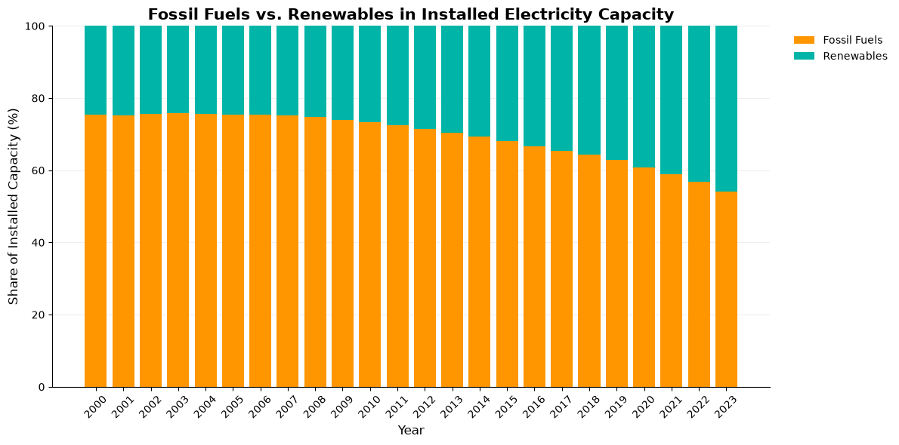
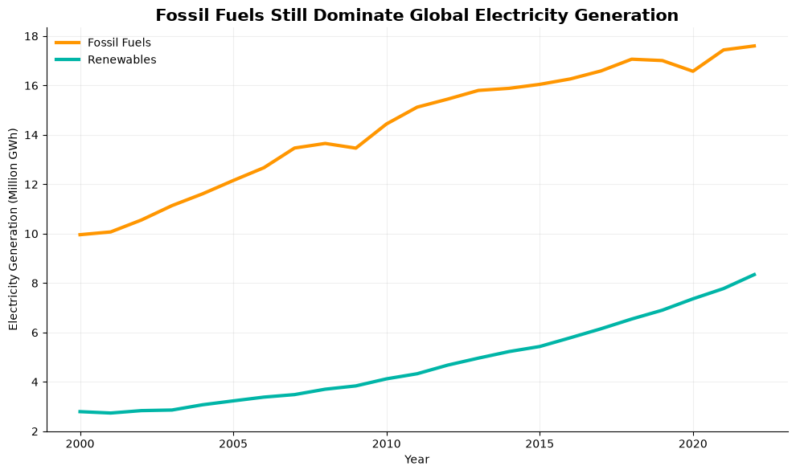

Proposition: The world is beginning to rely less on fossil fuels for electricity.
FOR the Proposition

Design Decisions and Rationale:
- We combined the various renewable energy sources under the category of “Renewables” to create a clearer contrast between renewable energy and fossil fuels. This grouping simplifies the visualization and makes it easier for viewers to compare the two major energy categories. (+2)
- We chose teal (#00B5A7) for renewables and orange (#FF9600) for fossil fuels because they provide a clear visual distinction between the two categories. This helps viewers distinguish the energy sources, including some viewers with color-vision deficiencies. We also maintained consistent color assignments across both visualizations to make comparisons between them easier. (+2)
- We used the indicator “Electricity Installed Capacity, Megawatt” and converted the values into percentages to highlight the growth of renewable energy infrastructure worldwide. Increasing installed capacity suggests that the world is expanding its ability to generate electricity from renewable sources, supporting the proposition that the world is beginning to rely less on fossil fuels. (-1)
- We used a stacked bar chart to show changes in the composition of global electricity generation capacity over time. By displaying fossil fuels and renewables together, the chart emphasizes the changing balance between these energy sources and makes the growth of renewables more visually apparent. (-0.5)
AGAINST the Proposition

Design Decisions and Rationale:
- We combined the various renewable energy sources under the category of “Renewables” to create a clearer contrast between renewable energy and fossil fuels. This grouping simplifies the visualization and makes it easier for viewers to compare the two major energy categories. (+2)
- We chose teal (#00B5A7) for renewables and orange (#FF9600) for fossil fuels because they provide a clear visual distinction between the two categories. This helps viewers distinguish the energy sources, including some viewers with color-vision deficiencies. We also maintained consistent color assignments across both visualizations to make comparisons between them easier. (+2)
- We used the indicator “Electricity Generation, Gigawatt hours” to emphasize the amount of electricity actually produced by each energy source. This highlights the continued contribution of fossil fuels to global electricity generation and challenges the idea that the world is already moving away from fossil fuels. (-1)
- We used a line chart with a truncated y-axis starting at 2 million GWh rather than zero. The graph emphasizes that fossil-fuel electricity generation continues to grow alongside renewable generation, suggesting that the expansion of renewable energy has not necessarily resulted in an absolute decline in fossil-fuel electricity production. (-0.5)
Final Reflection
The two opposing visualizations use different metrics to tell two different narratives about the world's reliance on fossil fuels. The first graph uses installed electricity generation capacity, with year on the x-axis and the share of installed capacity on the y-axis. Using a stacked bar chart, it shows that the share of installed capacity from renewable energy increases over time, reinforcing the idea that the global electricity system is shifting toward renewable energy. In contrast, the second graph uses actual electricity generation, with year on the x-axis and electricity generated on the y-axis. Although renewable electricity generation increases, fossil fuels continue to generate substantially more electricity. This line graph therefore supports the opposing argument that fossil fuels remain a major contributor to the global electricity supply. Both visualizations present valid information, but their different metrics emphasize different aspects of the same data and try to convince viewers to reach different conclusions.
This project helped us understand how visualization design can influence the interpretation of data without necessarily making the data itself inaccurate. For example, stakeholders or policymakers could interpret increasing renewable installed capacity as evidence that the world is already moving away from fossil fuels, potentially overlooking the continued ontribution of fossil fuels to actual electricity generation. Conversely, emphasizing the high level of fossil-fuel generation could lead viewers to underestimate the significance of renewable energy growth. People with opposing viewpoints could selectively use either visualization to support their interests, potentially influencing public opinion and policy decisions.
We now understand ethical data visualization as presenting information in a way that is persuasive while remaining faithful to what the data actually demonstrates. We believe that emphasizing a particular trend is acceptable when the visualization accurately represents the data and its framing does not imply conclusions that the evidence cannot support. However, persuasion becomes misleading when a visualization obscures important context or encourages viewers to confuse one metric, such as installed capacity, with another, such as actual electricity generation. This project showed us that ethical visualization involves more than presenting technically accurate numbers as it also requires considering how the audience might interpret them and whether the conclusions they draw are justified.